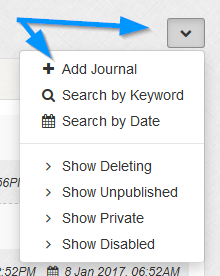
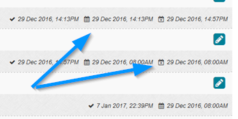

Toggle Navigation
Documentation
Manage Journals
Overview
Shows all journals currently in system.
Journal List
1
To delete, use checkboxes and the delete button. You can select all via the
icon.
2
To edit, click the
icon.
3
To reorder, drag and drop rows.
Filters
Shown via the
drop down icon.

Add Journal
- Click to add new journal (same as main menu).
Search by Keyword
- Click to show search box, enter keyword and search.
Search by Date
- Click to show date boxes and search by date range. Published date only.
Show Deleting
- Click to show journals set to auto delete.
Show Unpublished
- Click to show journals yet to be published.
Show Private
- Click to show private journals or journals made private by protected categories
Show Disabled
- Click to show disabled journals.
Dates
At the base of each journal 2 dates are always shown and a 3rd is shown if auto delete is set.

- Denotes date journal was created.
- Denotes date journal is published. May be a future date.
- Denotes date journal will auto delete (if applicable).
Icons
Icons may be shown for journals, these are explained as follows:
- Denotes private journal.
- Denotes private journal because of private category.
- Denotes pinned journal.
- Denotes comments are enabled for journal.